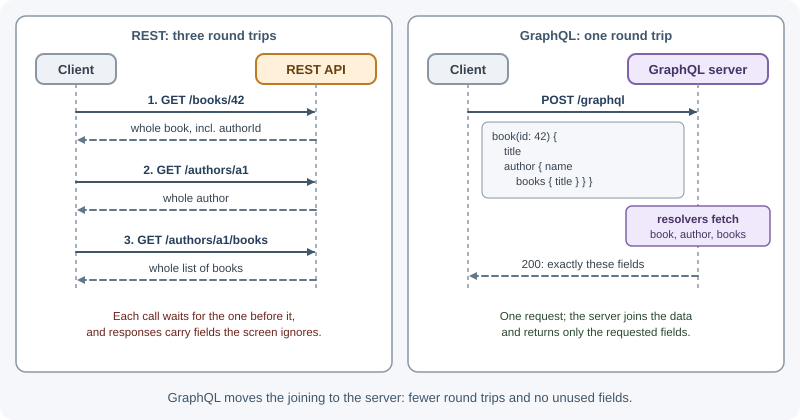
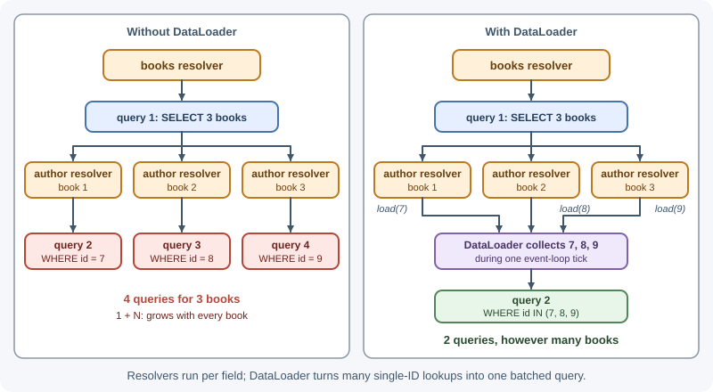
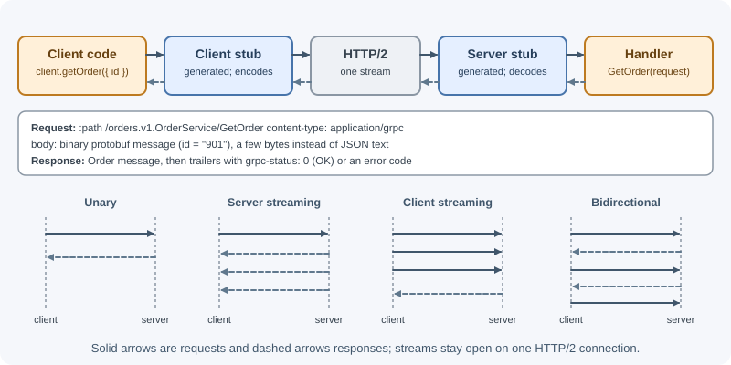

API Styles: REST, GraphQL, gRPC, and RPC¶
REST is the most common way to build web APIs, but not the only one. GraphQL lets clients ask for exactly the data they need, gRPC offers fast, strongly typed calls between services, and RPC styles such as JSON-RPC and tRPC model an API as a set of functions. Each style makes different trade-offs, and many companies use more than one.
Why it matters¶
- Choosing the wrong style creates years of friction: a public API in gRPC that browsers struggle to call, or a chatty internal REST API that wastes bandwidth between services.
- You will meet all of these in real systems: GraphQL from GitHub and Shopify, gRPC inside microservice platforms, JSON-RPC in blockchain nodes and editor tooling, SOAP in banks and government systems.
- Understanding the trade-offs helps you design a REST API better, too: many REST practices exist to solve problems GraphQL and gRPC solve differently.
Real-world usage¶
- GitHub offers GraphQL next to REST. GitHub's GraphQL API overview says GraphQL lets you "replace multiple REST requests with a single call to fetch the data you specify", and describes defining precisely the data you want as a powerful advantage over traditional REST endpoints.
- Shopify made GraphQL the default for its Admin API. Shopify's docs state the REST Admin API is a legacy API as of October 1, 2024, and that starting April 1, 2025, all new public apps must be built exclusively with the GraphQL Admin API.
- etcd defines its whole API in gRPC. The etcd documentation says all etcd APIs are defined in gRPC services, which categorize the remote procedure calls the server understands, including streaming APIs such as watch streams.
- Slack's Web API is RPC over HTTP. Slack calls its Web API
a collection of HTTP RPC-style methods, with
URLs like
https://slack.com/api/METHOD_FAMILY.method, and says it is not a REST API. - JSON-RPC powers Ethereum nodes and AI tool protocols. Every Ethereum client implements a JSON-RPC specification so applications get a uniform set of methods, and the Model Context Protocol requires that all messages follow JSON-RPC 2.0.
How it works¶
REST recap¶
- Many URLs, one per resource; standard HTTP methods; status codes carry the outcome.
- Works with every HTTP client, proxy, CDN, and browser; responses to
GETare cacheable by standard HTTP caches. - Weaknesses: the server decides the response shape, so clients may get too much data (over-fetching) or need several requests to build one screen (under-fetching).
See REST APIs.
GraphQL¶
GraphQL is a query language and runtime for APIs, created at Facebook and now
governed by the GraphQL Foundation. The server publishes a typed schema;
clients send queries naming exactly the fields they want, usually to a
single endpoint (POST /graphql).
Schema and types¶
type Author {
id: ID!
name: String!
books: [Book!]!
}
type Book {
id: ID!
title: String!
publishedYear: Int
author: Author!
}
input NewBook {
title: String!
authorId: ID!
}
type Query {
books(limit: Int = 20): [Book!]!
book(id: ID!): Book
}
type Mutation {
addBook(input: NewBook!): Book!
}
type Subscription {
bookAdded: Book!
}
- Scalars:
Int,Float,String,Boolean,ID(plus custom scalars such asDateTime). - Object types have fields; input types describe arguments.
!means non-null;[Book!]!is a non-null list of non-null books.- Query type: read operations. Mutation type: writes. Subscription type: a stream of events, usually over WebSockets.
Queries, mutations, and subscriptions¶
The client asks for exactly the shape it needs, including nested data, in one request:
query BookPage($id: ID!) {
book(id: $id) {
title
author {
name
books { title }
}
}
}
{
"data": {
"book": {
"title": "Understanding REST",
"author": { "name": "Ana Li", "books": [{ "title": "Understanding REST" }, { "title": "HTTP basics" }] }
}
}
}
A mutation changes data and returns the fields you ask for:
mutation {
addBook(input: { title: "GraphQL in depth", authorId: "a1" }) {
id
title
}
}
A subscription keeps a connection open and pushes results when events occur:
subscription { bookAdded { id title } }
Resolvers¶
Each field in the schema is backed by a resolver function. The GraphQL
engine walks the query and calls the resolver for every requested field. A
resolver receives the parent object, the field's arguments, a shared
context (per request: the current user, data loaders), and query info.
Over-fetching and under-fetching solved¶
The mobile app asks for three fields, the desktop app for twenty, and neither needs a custom endpoint. A screen that needed five REST calls can be one GraphQL query.

The N+1 problem and DataLoader¶
Resolvers run per field, so a naive implementation of the query above runs one query for the list of books plus one query per book to load its author: N+1 database round trips.
DataLoader fixes this by collecting all load(id) calls made during one
tick of the event loop and resolving them with a single batched query,
plus per-request caching of results.

import DataLoader from "dataloader";
// Create a new loader per request (in the GraphQL context) so caches never
// leak data between users
function createLoaders(db) {
return {
author: new DataLoader(async (ids) => {
const rows = await db.authors.findByIds(ids); // ONE query: WHERE id IN (...)
const byId = new Map(rows.map((a) => [a.id, a]));
return ids.map((id) => byId.get(id) ?? null); // same order as ids
}),
};
}
const resolvers = {
Book: {
author: (book, _args, ctx) => ctx.loaders.author.load(book.authorId),
},
};
Caching difficulties¶
- Queries usually go as
POSTto one URL, so standard HTTP caches and CDNs cannot cache them by URL. - Every client can request a different shape, so responses vary endlessly.
- Common answers: client-side normalized caches (Apollo Client, urql,
Relay) that cache objects by type and ID, persisted queries (the client
sends a hash of a pre-registered query, which can be a cacheable
GET), and server-side caching in resolvers.
Errors¶
A GraphQL response has data and/or an errors array. Partial success is
normal: one field can fail while others succeed.
{
"data": { "book": { "title": "Understanding REST", "author": null } },
"errors": [
{
"message": "Author service unavailable",
"path": ["book", "author"],
"extensions": { "code": "SERVICE_UNAVAILABLE" }
}
]
}
Traditionally, servers return HTTP 200 even when errors is present,
because the request itself was processed. That means HTTP-level monitoring
and status-code-based retries do not see these failures; you must inspect the
errors array and track error codes in extensions. (The GraphQL-over-HTTP
specification work refines this, for example using 4xx for requests that
fail before execution, such as unparseable queries. Apollo Server already
answers a query that fails validation, such as one asking for a field that
does not exist, with 400 and the code GRAPHQL_VALIDATION_FAILED.)
Security and performance limits¶
Because clients write arbitrary queries, one request can be enormously expensive:
{ authors { books { author { books { author { books { title } } } } } } }
Protect the server with:
- Depth limits (reject queries nested deeper than, say, 8 levels).
- Complexity or cost analysis (assign costs to fields and reject queries above a budget); rate limit by cost, not by request count.
- Pagination arguments with maximums on every list field.
- Persisted queries / allowlists for first-party clients.
- Authorization in resolvers or the business layer, per field where needed; the single endpoint means you cannot authorize by URL.
- Considering disabling introspection in production for private APIs.
Evolution without versions¶
GraphQL APIs typically evolve one schema instead of versioning: add new
fields freely, mark old ones with @deprecated(reason: "..."), and remove
them once usage drops to zero.
gRPC¶
gRPC is a high-performance RPC framework originally developed at Google. You define services and messages in Protocol Buffers (protobuf), generate client and server code in many languages, and call remote methods as if they were local functions.
syntax = "proto3";
package orders.v1;
service OrderService {
rpc GetOrder (GetOrderRequest) returns (Order); // unary
rpc ListOrders (ListOrdersRequest) returns (stream Order); // server streaming
rpc UploadEvents (stream OrderEvent) returns (UploadSummary); // client streaming
rpc Chat (stream ChatMessage) returns (stream ChatMessage); // bidirectional
}
message GetOrderRequest {
string id = 1;
}
message Order {
string id = 1;
string status = 2;
int64 total_cents = 3;
}
The numbers (= 1, = 2) are field tags used in the binary encoding. Never
change or reuse a tag; that is how protobuf stays backward compatible.
How it works:
- Binary protobuf encoding: much smaller and faster to parse than JSON.
- HTTP/2 transport: multiplexed streams over one connection, header compression, and long-lived streams.
- Four call types: unary (one request, one response), server streaming, client streaming, and bidirectional streaming.
- Code generation:
protoc(or the Buf tool) generates typed stubs, so the contract is enforced at compile time. - Deadlines: every call should carry a deadline; it propagates to downstream calls.
- Its own status codes (
OK,INVALID_ARGUMENT,NOT_FOUND,PERMISSION_DENIED,UNAVAILABLE,DEADLINE_EXCEEDED, and others) sent in HTTP/2 trailers, not HTTP status codes.

Browser limits: browsers do not give JavaScript the low-level HTTP/2 control gRPC needs, so web apps use gRPC-Web (through a proxy such as Envoy, or a server that speaks it natively) or a compatible protocol such as Connect. That is why gRPC shines between backend services and less for public, browser-facing APIs. See gRPC.
JSON-RPC¶
JSON-RPC 2.0 is a tiny, transport-agnostic RPC protocol. You send a method name and parameters; you get a result or an error.
{ "jsonrpc": "2.0", "method": "orders.get", "params": { "id": "ord_901" }, "id": 1 }
{ "jsonrpc": "2.0", "result": { "id": "ord_901", "status": "paid" }, "id": 1 }
{ "jsonrpc": "2.0", "error": { "code": -32601, "message": "Method not found" }, "id": 1 }
- A request without an
idis a notification (no response expected). - Several requests can be sent as a batch array.
- Reserved error codes include
-32700(parse error),-32600(invalid request),-32601(method not found),-32602(invalid params), and-32603(internal error). - Used by Ethereum nodes, the Language Server Protocol (editor tooling), and the Model Context Protocol (AI tool integrations). It runs over HTTP, WebSockets, or standard input/output.
tRPC¶
tRPC is a TypeScript library for building type-safe APIs without a schema language or code generation. The server defines procedures; the client imports the router's type and gets full autocompletion and compile-time checking of inputs and outputs.
// server
const appRouter = router({
orderById: publicProcedure
.input(z.object({ id: z.string() }))
.query(({ input }) => db.orders.findById(input.id)),
});
export type AppRouter = typeof appRouter;
// client (type-only import; no generated code)
const order = await trpc.orderById.query({ id: "ord_901" }); // fully typed
It is excellent when one team owns a TypeScript frontend and backend (often a monorepo, often with Next.js). It is a poor fit for public APIs or clients in other languages, because the contract lives in TypeScript types.
SOAP¶
SOAP (originally Simple Object Access Protocol) is an older, XML-based messaging protocol, widely used in enterprise systems in the 2000s.
<soap:Envelope xmlns:soap="http://www.w3.org/2003/05/soap-envelope">
<soap:Body>
<GetOrder xmlns="http://example.com/orders">
<Id>ord_901</Id>
</GetOrder>
</soap:Body>
</soap:Envelope>
- Messages are XML envelopes, usually sent with
POSTto one endpoint. - A WSDL document describes the operations and types; tools generate clients from it.
- A family of WS-* standards adds security, transactions, and reliable messaging.
- Verbose and heavyweight, but still common in banking, insurance, healthcare, payments, and government integrations. You are more likely to consume a SOAP service than to build a new one.
Comparison¶
| REST | GraphQL | gRPC | JSON-RPC | tRPC | SOAP | |
|---|---|---|---|---|---|---|
| Model | Resources + HTTP methods | Typed graph, client-chosen fields | Typed remote procedures | Remote procedures | Typed TypeScript procedures | XML operations |
| Contract | OpenAPI (optional) | Schema (required) | .proto files (required) |
Informal / docs | TypeScript types | WSDL |
| Payload | Usually JSON | JSON | Binary protobuf | JSON | JSON | XML |
| Transport | HTTP/1.1, 2, 3 | HTTP (+ WebSockets for subscriptions) | HTTP/2 | Any (HTTP, WebSocket, stdio) | HTTP (+ WebSockets) | HTTP (others possible) |
| Browser support | Native | Native | Needs gRPC-Web or a proxy | Native | Native | Possible but awkward |
| HTTP caching | Excellent for GET |
Hard (needs persisted queries or client caches) | No | No | Limited | No |
| Streaming | SSE or WebSockets alongside | Subscriptions | Built-in, four modes | Via transport | Subscriptions | No |
| Performance | Good | Good; depends on resolvers | Excellent | Good | Good | Heavier |
| Learning curve | Low | Medium | Medium to high | Low | Low (for TS developers) | High |
| Best for | Public APIs, CRUD, web and mobile apps | Many clients with different data needs, complex nested UIs | Internal service-to-service calls, low latency, streaming | Simple command-style APIs, tooling protocols | Full-stack TypeScript apps owned by one team | Legacy enterprise integrations |
When to use and when not to use¶
Choosing a style¶
- Public API for third parties: REST (with OpenAPI). Everyone can call it with anything.
- Product with web and mobile clients needing different data from a rich domain: GraphQL, often as a gateway in front of other services.
- Internal microservices with high throughput or streaming: gRPC.
- One team, TypeScript end to end: tRPC.
- Integrating with a bank or government system: whatever they offer, often SOAP.
- Mixing is normal: gRPC between services, a GraphQL or REST layer facing clients, webhooks for events.
When not to use each¶
- GraphQL: not for simple CRUD APIs with one client, file downloads, or APIs that depend on HTTP caching and CDNs; not without the capacity to build query limits, DataLoader batching, and error monitoring.
- gRPC: not for public, browser-facing APIs where callers cannot easily generate stubs or use HTTP/2 directly; not when humans need to debug calls with curl and a browser.
- tRPC: not for public APIs, mobile apps in other languages, or teams that do not share one TypeScript codebase.
- JSON-RPC: not when you want HTTP semantics (caching, status codes, resource URLs) to do part of the work.
- SOAP: not for new APIs, unless a partner requires it.
- REST: less suited when one screen needs data from many resources with many client variants (GraphQL), or for chatty internal streaming (gRPC).
| If your main constraint is... | Prefer | Then add |
|---|---|---|
| Unknown third-party clients | REST | OpenAPI, webhooks for events |
| Many client shapes over one data graph | GraphQL | DataLoader, depth/cost limits, persisted queries |
| Latency and throughput between services | gRPC | Deadlines, protobuf linting, a gateway for browsers |
| One team, one TypeScript monorepo | tRPC | Zod validation on inputs |
| A tool or agent protocol | JSON-RPC | A clear method catalog and error codes |
Practical examples¶
A small GraphQL server in Node.js¶
import { ApolloServer } from "@apollo/server";
import { startStandaloneServer } from "@apollo/server/standalone";
const authors = [{ id: "a1", name: "Ana Li" }];
const books = [{ id: "b1", title: "Understanding REST", authorId: "a1" }];
const typeDefs = `#graphql
type Author { id: ID!, name: String! }
type Book { id: ID!, title: String!, author: Author! }
type Query { books: [Book!]!, book(id: ID!): Book }
type Mutation { addBook(title: String!, authorId: ID!): Book! }
`;
const resolvers = {
Query: {
books: () => books,
book: (_parent, { id }) => books.find((b) => b.id === id) ?? null,
},
Mutation: {
addBook: (_parent, { title, authorId }) => {
const book = { id: `b${books.length + 1}`, title, authorId };
books.push(book);
return book;
},
},
// Field resolver: runs for every Book whose author is requested
Book: {
author: (book) => authors.find((a) => a.id === book.authorId),
},
};
const server = new ApolloServer({ typeDefs, resolvers });
const { url } = await startStandaloneServer(server, { listen: { port: 4000 } });
console.log(`GraphQL ready at ${url}`);
Query it:
curl -s http://localhost:4000/ -H "Content-Type: application/json" \
-d '{"query":"{ books { title author { name } } }"}'
The same read in each style¶
REST: GET /api/books/b1?include=author
GraphQL: POST /graphql {"query":"{ book(id:\"b1\") { title author { name } } }"}
gRPC: bookService.GetBook({ id: "b1" }) (generated client, binary over HTTP/2)
JSON-RPC: POST /rpc {"jsonrpc":"2.0","method":"books.get","params":{"id":"b1"},"id":1}
tRPC: trpc.bookById.query({ id: "b1" })
Best practices¶
- Pick the style for the consumer, not for fashion: public and browser clients favor REST or GraphQL; internal hot paths favor gRPC.
- GraphQL: use DataLoader, enforce depth and cost limits, paginate every
list, authorize in the business layer, and monitor
errorsseparately from HTTP status codes. - gRPC: set deadlines on every call, never reuse protobuf field numbers,
version packages (
orders.v1), and keep.protofiles in a shared repository. - RPC styles: keep method names consistent and document error codes.
- Whatever the style: a clear contract, consistent errors, authentication, rate limiting, and observability still apply.
In production¶
- GraphQL database load explodes on one screen. Detect: traces show hundreds of nearly identical database queries for a single GraphQL request. Cause: the N+1 problem in field resolvers. Fix: batch with a per-request DataLoader, and alert on queries per request.
- One client's query pins the CPU. Detect: CPU spikes that line up with one deeply nested or very wide query in the logs. Cause: no depth or cost limits. Fix: enforce depth and complexity limits, cap list sizes, and use persisted queries for your own clients.
- Errors invisible to monitoring.
Detect: the HTTP error rate is near zero while users report failures;
responses are
200with anerrorsarray. Cause: monitoring only counts HTTP status codes. Fix: log and count GraphQL errors byextensions.codeand operation name. - Stack traces in GraphQL error responses.
Detect: production responses contain
extensions.stacktrace. Cause: Apollo Server'sincludeStacktraceInErrorResponsesdefaults totrueunlessNODE_ENVisproductionortest. Fix: setNODE_ENV=productionin production, or set the option tofalseexplicitly. - gRPC calls pile up during an incident.
Detect: in-flight calls and memory grow while a downstream service is
slow, and few calls end with
DEADLINE_EXCEEDED. Cause: calls without deadlines wait indefinitely. Fix: set a deadline on every call and propagate it downstream. - Corrupted data after a protobuf change.
Detect: values appear in the wrong fields during a rolling deploy when
old and new services talk to each other. Cause: a deleted field's
number was reused. Fix: never reuse field numbers; the
protobuf language guide
says you must reserve deleted field numbers with
reserved.
Important terminology¶
- Over-fetching / under-fetching: receiving more data than needed / needing several requests to get enough data.
- GraphQL schema: the typed description of everything a GraphQL API can return.
- Resolver: the function that produces the value of one GraphQL field.
- N+1 problem: one query for a list plus one query per item.
- DataLoader: a utility that batches and caches loads within a request.
- Persisted query: a pre-registered query referenced by an ID or hash.
- Protocol Buffers: Google's language-neutral binary serialization format and schema language.
- Unary / streaming RPC: a call with one request and one response / with a stream of messages in one or both directions.
- RPC: remote procedure call; invoking a function on another machine.
- WSDL: the XML document describing a SOAP service.
Common mistakes and misconceptions¶
- "GraphQL replaces databases or REST everywhere." It is an API layer; resolvers still call databases and services, often REST or gRPC ones.
- Ignoring N+1 in GraphQL, turning one query into hundreds of database calls.
- Leaving GraphQL queries unbounded, so one malicious query exhausts the server.
- Treating a GraphQL
200as success without checkingerrors. - Exposing gRPC directly to browsers without gRPC-Web or a gateway.
- Reusing protobuf field numbers, silently corrupting data between old and new services.
- Choosing tRPC for a public API consumed by other languages.
- Calling a level-0 "POST everything" API REST. That is RPC over HTTP.
Revision questions¶
- What problem do over-fetching and under-fetching describe, and how does GraphQL address them?
- Explain the N+1 problem in GraphQL and how DataLoader solves it.
- Why is HTTP caching harder with GraphQL than with REST?
- What are the four gRPC call types, and why is gRPC uncommon for public browser APIs?
- When is tRPC a good choice, and when is it a poor one?
- Which style would you choose for internal, high-throughput service calls, and why?
Further learning¶
- GraphQL: Introduction to GraphQL and the GraphQL specification.
- gRPC: Introduction to gRPC and core concepts.
- Protocol Buffers: protobuf.dev.
- JSON-RPC: JSON-RPC 2.0 Specification.
- tRPC: tRPC documentation.
- OWASP: GraphQL Cheat Sheet.